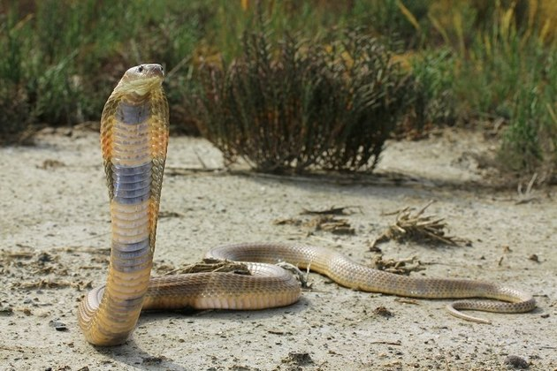

Naja
Naja
| Reino: | Animalia |
| Classe: | Reptilia |
Naja é um género de serpentes peçonhentas da família
Elapidae (cobras). Seu habitat estende-se a toda a África, Sudoeste da Ásia, Sul da Ásia e Sudeste Asiático.
Apesar de vários outros gêneros compartilharem o nome comum, o gênero Naja é o grupo mais reconhecido e mais
difundido de cobras comumente conhecidos. O género Naja consiste de 20 a 22 espécies, mas sofreu várias
revisões taxonômicas nos últimos anos, portanto, as fontes variam muito. Também são conhecidas pelos nomes
populares de cobra-capelo, cobra-de-capelo (também escrito cobra de
capelo ou cobra capelo). São animais peçonhentos, agressivos e bastante perigosos. Algumas espécies
têm a capacidade de elevar grande parte do corpo e/ou de cuspir o veneno para se defender de predadores a
distâncias de até dois metros. Outras espécies, como por exemplo a Naja tripudians, dilatam o
pescoço quando o animal é enraivecido. A artimanha serve para "aumentar" seu tamanho aparente e assustar um
possível predador. Atrás da cabeça, a naja também pode possuir um círculo branco parecido com um olho,
também eficaz em amedrontar agressores que a confundam com um animal maior e mais perigoso.
As najas são os animais tipicamente utilizados pelos célebres encantadores de cobras
da Índia; no entanto elas apenas acompanham os movimentos da flauta, já que cobras não possuem
audição.
As diferentes espécies Naja existentes variam de comprimento e são, na sua maioria,
de corpo delgado. Grande parte são capazes de atingir comprimentos de 1,84 m. O comprimento máximo de
algumas das maiores espécies de cobra são em torno de 3,1 m, com a Naja ashei (2,7 m), sendo a
maior da espécie e encontrada na Quênia de acordo com a ONG que cuida da preservação de répteis
WildlifeDirect. Ainda de acordo com a organização, a referida espécie possui veneno suficiente para matar 15
humanos adultos. Outra com tamanho avantajado é a Naja melanoleuca (1,50 m), que pode crescer até
cerca de 3,0 m. Todas têm uma capacidade característica de levantar os quartos dianteiros de seus corpos do
chão e achatar seus pescoços para parecer maior para um predador em potencial.
Nandaia ou nhandaia
Aratinga solstitialis
| Reino: | Animalia |
| Classe: | Aves |
Jandaia-amarela (Aratinga solstitialis) é uma ave da família dos psitacídeos que possui três raças distintas, encontradas na Amazônia e em várias regiões do Brasil. A espécie possui cerca de 31 centímetros de comprimento, bico negro e plumagem laranja, amarela e verde. Também é conhecida pelos nomes de cacaué, nandaia, nhandaia, queci-queci e quijuba.